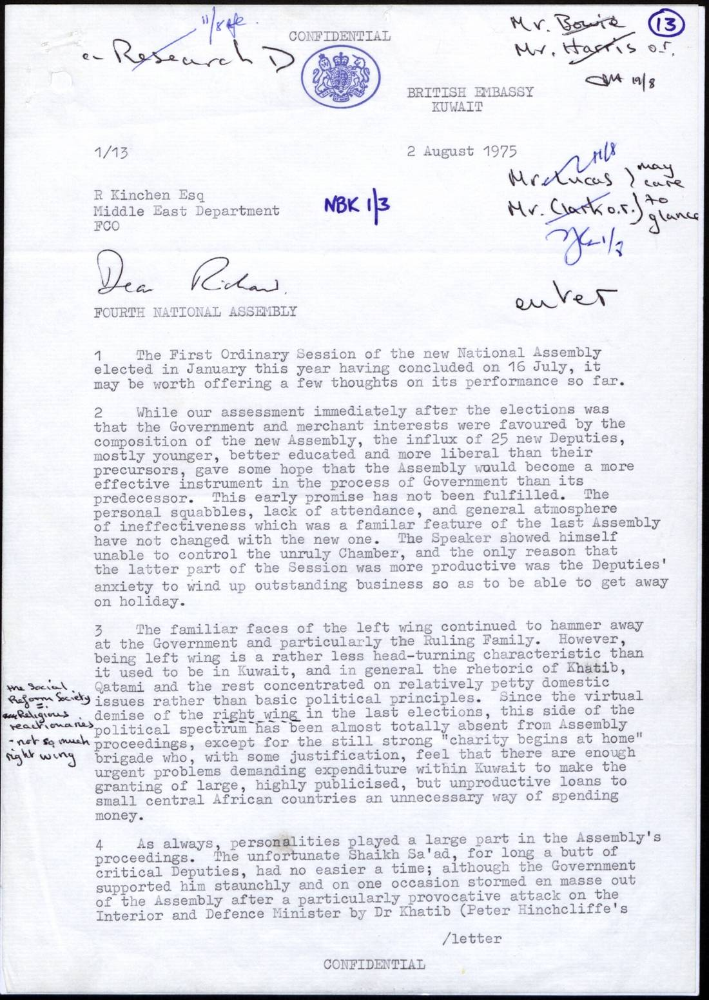
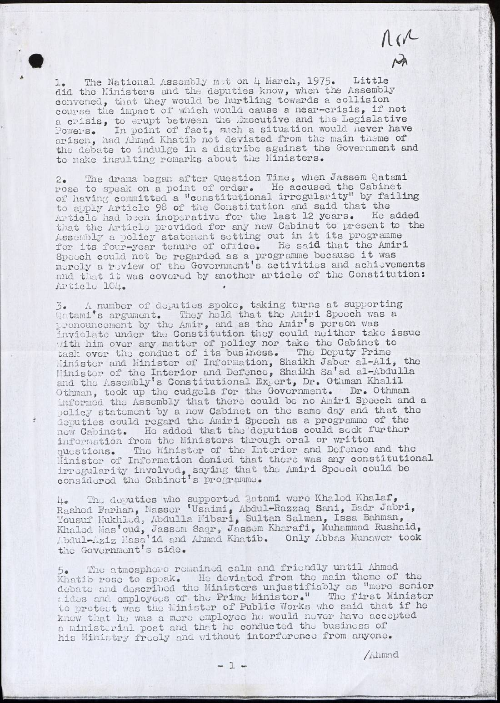
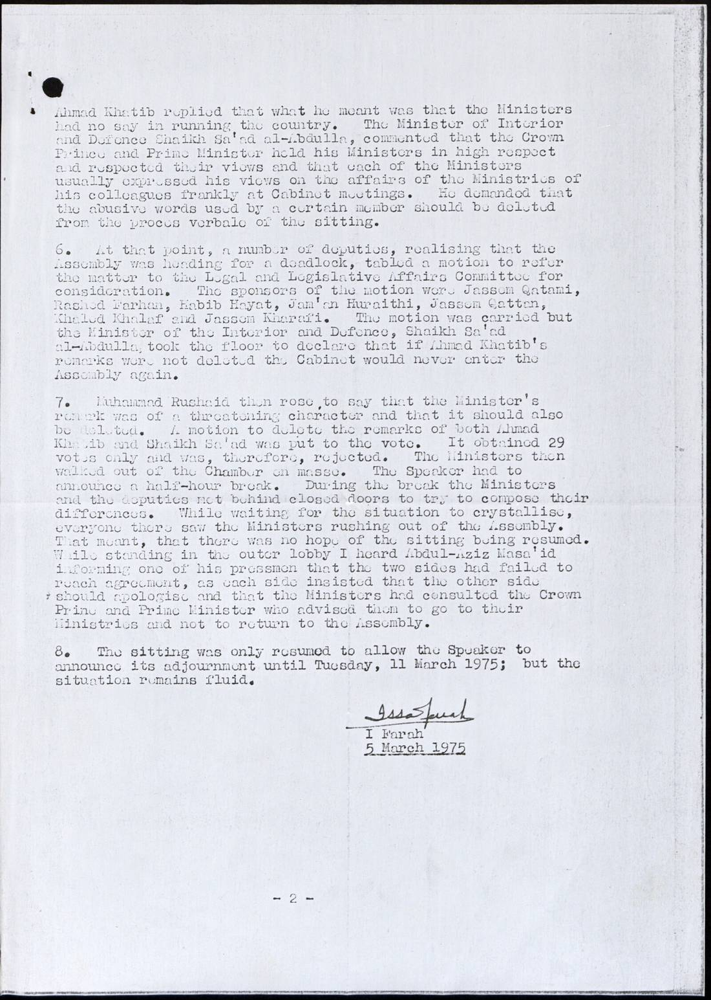

١٩٧٥ · تقارير السفارة البريطانية عن دور انعقاد مجلس الأمة
جاسم القطامي يثير المادة ٩٨ من الدستور
ما هي
يقف جاسم القطامي على نقطة نظام ويتهم مجلس الوزراء بمخالفة المادة ٩٨ من الدستور لعدم تقديم برنامج لمدة ولايته. ويؤيده عدد من النواب، وهو من مقدمي اقتراح إحالة المسألة إلى لجنة الشؤون التشريعية والقانونية.
أهميتها
سجل لعمل جاسم داخل المجلس دفاعا عن الدستور.
من المقصود
هو جاسم القطامي نفسه الوارد اسمه الكامل في وثائق أخرى: مدير الشرطة الذي استقال وقت أزمة السويس، ثم النائب القومي في مجلس الأمة.
صور الصفحات



النص الأصلي
ملاحظات
تذكر الصفحة ٢٩ من الملف نفسه القطامي أيضا بين اليسار الذي واصل الضغط على الحكومة. وأسماء النواب الآخرين كما كتبها البريطانيون.
المصادر
الأرشيف الوطني البريطاني في لندن، رقمنه الأرشيف الرقمي للخليج العربي (agda.ae). الصور منشورة بإذن من الأرشيف الوطني البريطاني.
مرجع الأرشيف
- FCO 8/2442 · Internal political situation in Kuwait
كيف كُتب هذا النص: نُسخ من قراءة الأرشيف لنص الصورة، وصُحح بالمقارنة مع الصورة حيث كانت القراءة مشوهة. وتشير … إلى نص محذوف. الترجمة العربية من Claude، يرجى مراجعتها.
افتح في الموقع التفاعلي